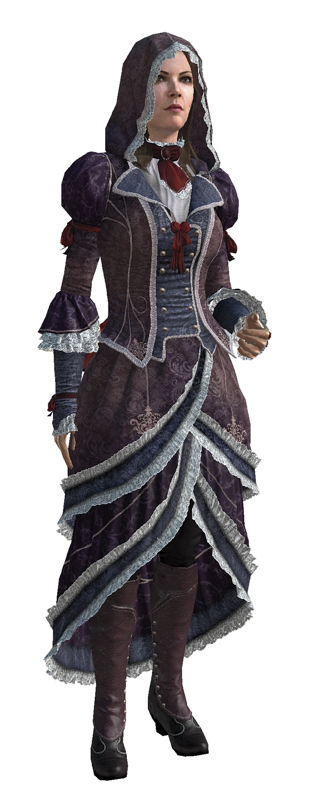

Шэй Патрик Кормак — член Колониальной ложи Ордена Тамплиеров, живший в XVIII веке. Бывший член Братства Колониальных Ассасинов. Однажды во время задания Братства Ассасинов, Шэй получил доступ к Храму Предтеч в Лиссабоне и непреднамеренно инициировал крупное землетрясение, в результате которого погибли тысячи человек. После этого его идеалы и принципы подверглись сомнению, как и его отношение к ассасинам. После того, как ассасины попытались его убить, Шэй окончательно разочаровался в них и присоединился к Ордену Тамплиеров. Шэй Патрик Кормак родился 29 ноября 1731 года в Нью-Йорке, в семье ирландских иммигрантов из Дублина. Его мать умерла при родах, а отец часто отсутствовал, так как он был матросом на торговом флоте, поэтому Шэя воспитывала его тетя. Живя в неблагополучной части города, Шэй часто попадал в неприятности, но его выручал лучший друг Лайам О`Брайен. Когда Шэй подрос, то он уже присоединился к отцу в море. Отец обучал его фехтованию и стрельбе, благодаря чему во время абордажа он смог убить капитана пиратов. В 1747 году сильный шторм смыл за борт отца Шэя и еще несколько человек из команды. Потеряв все, что у него было, он начал бродить по улицам Нью-Йорка и драться в тавернах. Во время одной такой драки он снова встретил Лайама, который помог Шэю оправиться от потери. В том же году, Лайам представил Шэя своему наставнику Ахиллесу Дэвенпорту, и спустя некоторое время, Ахиллес посвятил Шэя в Братство Ассасинов. В течении следующих четырех лет, Шэй посвятил себя Братству. Тем не менее, он по-прежнему сомневался в Кредо Ассасинов, поэтому поделился своими мыслями о несоответствии принципов ассасинов с Кредо Лайаму. Узнав об этом, Ахиллес стал сам лично контролировать Шэя.
Хоуп Дженсен — член Братства Ассасинов в Северной Америке во время Семилетней войны. Являясь ученицей Ахиллеса Дэвенпорта. Контролировала большую часть организованной преступности Нью-Йорка, используя её как эффективную информационную сеть для Братства Ассасинов. Родилась в небогатой нью-йоркской семье. После смерти родителей угодила в приют для сирот, из которой её забрала пара из Германии, мечтавшая начать новую жизнь на территории колоний. Многолетний усердный труд отца в конечном итоге дал неплохой результат, и его дело начало приносить большую прибыль — со временем семья Хоуп стала общаться с нью-йоркской элитой. Правда, несмотря на богатства и старание походить на элиту, высшее общество так и не приняло их в свои ряды. Получила хорошее образование у частных преподавателей, благодаря которому со временем осознала несправедливое устройство мира. В 1742 году приемный отец бесследно исчез при таинственных обстоятельствах. В том же году бывшие деловые партнеры отца прибрали к рукам весь семейный бизнес, оставив Хоуп и ее мачеху ни с чем. Оставшись без средств к существованию, они начали жить на улице. Спустя некоторое время приемная мать скончалась от долгой и мучительной болезни, несмотря на все старания девушки, воровавшей для нее лекарства и еду. После этого Дженсен поклялась больше никогда и ни от кого не зависеть.
Хоуп Дженсен — член Братства Ассасинов в Северной Америке во время Семилетней войны. Являясь ученицей Ахиллеса Дэвенпорта. Контролировала большую часть организованной преступности Нью-Йорка, используя её как эффективную информационную сеть для Братства Ассасинов. Родилась в небогатой нью-йоркской семье. После смерти родителей угодила в приют для сирот, из которой её забрала пара из Германии, мечтавшая начать новую жизнь на территории колоний. Многолетний усердный труд отца в конечном итоге дал неплохой результат, и его дело начало приносить большую прибыль — со временем семья Хоуп стала общаться с нью-йоркской элитой. Правда, несмотря на богатства и старание походить на элиту, высшее общество так и не приняло их в свои ряды. Получила хорошее образование у частных преподавателей, благодаря которому со временем осознала несправедливое устройство мира. В 1742 году приемный отец бесследно исчез при таинственных обстоятельствах. В том же году бывшие деловые партнеры отца прибрали к рукам весь семейный бизнес, оставив Хоуп и ее мачеху ни с чем. Оставшись без средств к существованию, они начали жить на улице. Спустя некоторое время приемная мать скончалась от долгой и мучительной болезни, несмотря на все старания девушки, воровавшей для нее лекарства и еду. После этого Дженсен поклялась больше никогда и ни от кого не зависеть.